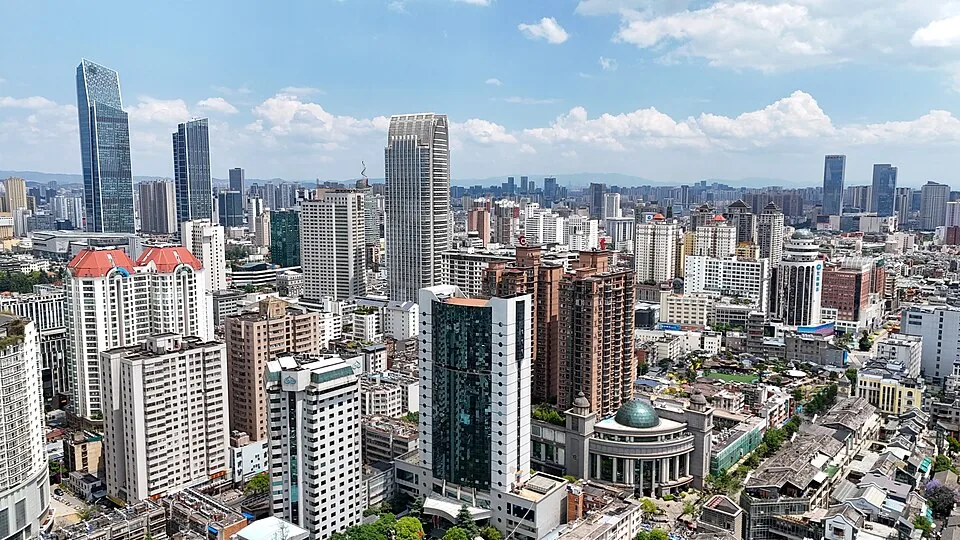

11—12月来昆明，白天的太阳不能代替房里的制热
昆明与北京时间相同，房间会是大部分工作日的起点。11—12月选房，要把晚间和阴天也考虑进去。不能接受久坐时手脚发冷，就把可用的制热设备写进住房条件；商家标有宽带，也应在房内试常用的会议工具和业务系统。
长水机场的地铁乘车处在航站楼B2层，6号线连接机场中心与塘子巷，并可换乘2、3、4号线。晚间到达时单独查当日末班。机场交通说明。
4,800、7,000和10,500元，各自给房间留多少
三档按单人承担整间房、30晚，主要在房间工作规划。省钱档预留4,800元，舒适档7,000元，宽裕档10,500元；住房分别留2,500、3,500和5,200元。多出的住房余量可以用于比较采光更好的房间，或把睡觉与工作分开的户型，具体能否找到仍取决于日期和租期。
各项生活费放在下表。拿到覆盖全部晚数的住房报价后，可在工具中替换房费；这些预留没有对应已确认空房，不是昆明消费均价。往返大交通、保险和可退押金另备。物业、清洁或服务费若单收，也要列进整段报价，避免遗漏或与水电杂费重复。
- 单人整间独住30晚，默认房间办公；住房和五项生活费均为编辑预留，实际房费和杂费另确认。
- 总额包含所列预留和参考票价；未确认的税费与超量费用、机票、签证、保险及押金另计。
各项换算后都取整，总额则先加原币、再统一换算，因此逐项相加可能有一点差额。
| 项目 | 原币（CNY） | 显示币种（CNY） | 依据与条件 |
|---|---|---|---|
| 住房预留 | 3,500 元 | 3,500 元 | 预算预留计价条件单人承担整间房的30晚住房预留；未确认指定日期含费订单。 30晚按一笔月价参照或住房预留规划，最终日期和含费范围仍须确认。 |
| 额外共享办公票 | 0 元 | 0 元 | 预算预留计价条件不额外购买工位；房间的桌椅与通话条件另确认。 |
| 餐饮与饮料 | 1,800 元 | 1,800 元 | 预算预留计价条件单人30晚的生活预留，按自己的用量调整；不是消费均价。 按所选30晚调整，不代表实际消费。 |
| 市内交通 | 300 元 | 300 元 | 预算预留计价条件单人30晚的生活预留，按自己的用量调整；不是消费均价。 按所选30晚调整，不代表实际消费。 |
| 水电与住房杂费 | 400 元 | 400 元 | 预算预留计价条件单人30晚的生活预留，按自己的用量调整；不是消费均价。 按所选30晚调整，不代表实际消费。 |
| 手机、洗衣与日用品 | 450 元 | 450 元 | 预算预留计价条件单人30晚的生活预留，按自己的用量调整；不是消费均价。 按所选30晚调整，不代表实际消费。 |
| 休闲与周末 | 550 元 | 550 元 | 预算预留计价条件单人30晚的生活预留，按自己的用量调整；不是消费均价。 按所选30晚调整，不代表实际消费。 |
| 总计 | 7,000 元 | 7,000 元 | 按原币总额统一换算 |
翠湖周边、大观路与环南，住法要跟工作安排一起选
翠湖周边：想把户外时间放进工作日
如果你希望午后或下班后有公园可去，可以从翠湖周边开始找房。惠悦家版筑翠园店提供了一个具体参照。开屏新闻2026年4月7日的公告介绍，首批30套都是67.11—67.3㎡的两室一厅，一个月起租，月租2,337—2,513元；配家具家电，无中介费。一个人承担整套费用，换来的是有机会把工作区和卧室分开。项目公告
这批公告价没有说明11—12月的空房，也未列水电、物业、清洁与押金，单人能否租和30晚怎样结算仍需问。看房时把桌子摆放位置和冬季日照一起确认，决定你白天是否愿意留在屋里。去翠湖的实际路线按所选楼栋查，本文不代填步行时间。
大观路：按门牌找房，给桌椅和采光留预算
DADA公开门店列表把环城西路店列在大观路154号。想把大观路一带作为生活范围，可以拿这个地址与别的候选房源比较。你每天要用的桌面能否放电脑和显示器，椅子能否久坐，吃饭后回房是否方便，都要落到具体门牌和房间，才能判断这笔房租值不值。门店与地址
环南：能短租的开间，适合把起居和办公放在同一间房
DADA环南店在明通路41号。具体房型页列出一间28㎡、北向外窗的开间，带独立厨房和卫生间，可签1—12个月，商家称家具家电齐全、每户独享100M宽带。小房间里既要睡觉又要开会，桌子的位置、插座和晚上能否通话，比公共活动区更直接影响工作。100M是运营方标称，实际上传和稳定性需要在房内试。房型页
这个页面展示1,349元/月，并在房源简介中明确说明属于年租押一付一价；只签一个月要另问价。北向也不能单独推断室温，看房时应确认设备能否制热，以及使用是否另收费。
虹山东路还有一个价格参照
艾米阳光公寓虹山东路店在60号，公开26㎡开间挂牌1,399—1,449元/月，押一付一。页面没有写这笔价格对应多长合同，也没有列水电和服务费。它适合加入询价名单，拿到单次入住全部费用后，再与上面的房型比较。艾米房源
偶尔离开房间办公，日票比长合同价更有用
主要在房间工作，可以把付费工位留给需要换环境或房间临时不适合工作的日子。Regus昆明的公开共享办公日票为180元/人/天起；每30晚用4天常规日票，仅票价就是720元起。具体中心有无座位、当天开放到几点，以及税费和通话安排，要在预订前确认。日票客户使用正常营业时间，不能直接套用专属工位客户的24小时出入条件。日票与使用条件
Regus同页的专属工位40元/人/天起，访问计划60元/人/天起，都注明按24个月合同定价。页面另有短期产品；需要只买一个月的人，应让对方按准确日期出报价，不能把60乘30写成1,800元灵活月票。
如果住在翠湖周边，沃力空间园西科技创新中心的地址是一二一大街105号园西电子广场。运营方页面显示750元/工位/月起，最短租期六个月；产品表的开放工位是1,000元/月起，并标7.5折。这里可以作为日后长住的办公候选，只住30晚时，这笔月价不进入预算。园西合同条件
咖啡放进休息时间，整天工作的座位另作判断
把咖啡留给午后休息，也可以在找房时看看自己愿意常去的餐馆。本页没有具体门店对长时间电脑办公的明确条件；需要带电脑坐店时，点单前问清使用和通话规则。重要会议仍留给能关门的房间或已预订工位。
0家符合条件
没有符合这组条件的地点，换一个筛选试试。


把候选地址排在一起，看自己的活动范围
下面的地址可复制到自己的地图。用具体楼栋入口检查每天会去的地点，步行与乘车分开看；这里没有核实的门到门路线，不填写通勤分钟数。
地点名单可直接使用；底图需要网络。
| 地点 | 地址或位置 | 用途 |
|---|---|---|
| 惠悦家版筑翠园店 | 版筑翠园小区，具体楼栋询运营方 | 一月起租的整套住房参照 |
| DADA环城西路店 | 大观路154号 | 大观路房源候选，30晚房费另问 |
| DADA环南店 | 明通路41号 | 可短租开间，展示价按年租 |
| 艾米阳光公寓虹山东路店 | 虹山东路60号 | 26㎡开间，最短合同未披露 |
| 沃力园西科技创新中心 | 一二一大街105号园西电子广场 | 工位至少六个月 |
大陆居民国内旅居，把精力放在合同与入住材料上
本篇按中国内地居民在昆明国内旅居写作，不涉及跨境入境签证。租住一个月，应让合同写清起止日期和房号，确认谁收款、提前退租怎样处理，以及押金何时退还。身份证等入住材料按运营方办理要求提供，付款对象与合同主体应能对应。
持港澳台证件或外国护照入住的人，需要在订房前向运营方确认适用的入住材料和登记安排。本篇没有核对相关出入境及工作资格，不能从这份国内预算推导停留权限。
11月与12月差别，要在傍晚后的房间里考虑
昆明1991—2020年的气候常年值中，11月月均气温12.5℃、降水30.6毫米；12月分别为9.5℃和13.1毫米。12月的月均气温更低，降水更少。若行程可以选，怕冷的人可以优先比较11月；具体年份仍可能出现降温，不能靠常年平均安排每天穿什么。昆明月气候表
冬季看房时，问清几点能晒到太阳、邻楼是否挡光，制热设备能否连续使用。卫生间热水和夜间被褥也要一起看。白天愿意出门散步，晚上回房能舒适地工作，才是这一个月真正会重复的安排。
向西住过的四个月：两居室之外，还有每月附加费
署名作者向西在2025年3月14日的文章里，回顾2023年9月底起约四个月的昆明旅居。作者因家人来访选择DADA高新店两居，准确入住人数未披露。向西原文
原文列出的当时三个月合同询价，房租加固定杂费每月2,578元，水电另付，押金2,289元。作者先付三个月后续一个月，没有提供完整实付总账；这笔历史金额不能作为2026年报价。
作者说不朝南的房间没有空调、感到冷，还遇过断电断网；也肯定管家愿意处理问题。这些是特定时期的个人经历，能帮助你准备看房问题，不代表今天每家门店。
想住昆明，先判断自己要怎样度过工作日
还在昆明与大理之间选择，可接着看大理月住指南。用相同的单人整间、30晚口径，把具体房间的制热和交通条件放在一起；也可看看厦门与成都，比较自己更愿意为哪一种日常安排留预算。
把日期、房号和含费总额一次问清
用实际入住和离店日期询价。11月1日入住的30晚，离店日为12月1日；12月1日入住的30晚，离店日是12月31日。让运营方按这两个日期、同一房型列出全部费用。
下面工具会随晚数生成询价文字，你可以复制后补上房号。冬季另写明需要制热、热水和适合工作的桌椅，请对方发这间房当前的白天与晚间视频；付款前保留合同主体、房号和完整报价。
冬天房间怎么选，30晚的钱怎样算
昆明冬天可以完全不考虑制热吗？
可以把是否需要制热作为个人选择，但不能用“春城”替房间做保证。12月常年平均气温9.5℃，向西也写过不朝南、无空调房间感到冷的经历。看具体日照和设备，久坐工作的人尤其要试傍晚后的房间。
DADA页面写1月起租，1,349元就是一个月房费吗？
该房型简介明确写这笔展示价按年租押一付一。1—12个月都能签，只说明租期可选；只签30晚的总房费与杂费仍要另问。
一个人需要租两居室吗？
未必。28㎡开间能把起居与工作放在同一间房，约67㎡两居则有机会把工作区分开。惠悦家公告按整套报价，单人能否租和实际费用还需运营方确认。优先判断桌椅、光线和通话，再决定要不要多一间。
押一付一，是否说明住完一个月就能正常退租？
押付方式和合同长度分别看。艾米虹山东路店虽标押一付一，页面未披露最短合同；DADA展示价也属于年租条件。合同要明确这30晚到期即正常退租，以及押金退款条件。
价格出处与图片署名
作者：Roamorrow 编辑部。本文链接不收取返佣。预算预留、公开价格与具名经历在对应段落说明；房型和含费范围按自己的日期确认。
价格与资料出处
- DADA环南店：1月起租房型L423417 · 2026-10-27
1349元不能当单月可订价。
- 艾米阳光公寓·虹山东路店 · 2026-10-27
最低租期、该价格所对应合同年限均未写明；月付不等于可只签一个月。
- 园西科技创新中心 · 2026-10-27
750月价不能用于只住30晚者；折扣具体承诺条件未完整公开。
- 联合办公在昆明 · 2026-10-27
城市级起价，不能保证所选分店与日期可订；本轮正文地点卡未加载，具体分店待确认。
- 昆明国企直租旅居公寓已启动预租，4月11日起可办理入住 · 2026-10-27
原文日期2026-04-07。 这是2026年4月公开启动公告中的运营方报价，经媒体报道，并非本轮取得的11—12月可订报价。
- 昆明旅居房子怎么租？租期有讲究吗？有哪些优质公寓？ · 2026-10-27
原文日期2025-03-14。 是历史署名个案，不是本站实住；询价单不能当四个月完整实际账单，也不能做2026年现价。
- 昆明月气候平年值，站号56778 · 2026-10-27
1991—2020常年值，不是2026年11—12月预报；月平均不能当白天/夜间气温，也不代表房内温度。
- 世界地点平年值的方法说明 · 2026-10-27
统计方法不构成短期天气、空气质量或室内取暖保证。
- 机场交通：地铁 · 2026-10-27
本页未以文字列现行票价、首末班和全程时长；不补旧版6元/28分钟或深夜服务。
- DADA公寓昆明门店列表 · 2026-10-27
门店挂牌月价适用租期未在本页写明，不视为30晚报价。
- ECB欧元参考汇率 · 2026-10-26
欧洲央行2026年10月26日参考值，仅用于规划换算；银行和支付费用另计。
同一品牌的公区与设备，要按今天的门店看
向西的旧文认为当时DADA高新店和环南店公区帮助不大。今天环南店的运营方房型页则介绍了影音、读书和健身等公共空间。两种描述时间不同，具体空间也可能变化，不能直接判断哪一个代表你将入住的房间。要把公共区当作选房理由，可以请管家给出当前门店视频，并问使用时段。